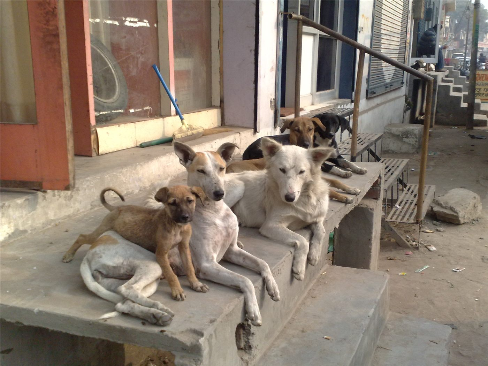

문틈에 모여 에어컨 바람 쐬던 유기견들…'천사' 손길에 온라인 감동
더위에 지친 유기견들이 가게 문틈에 줄지어 모여 에어컨 바람을 쐬는 모습이 포착돼 화제가 됐다. 이후 한 '천사' 같은 시민의 손길이 더해지며 온라인에서 큰 감동을 불러일으켰다.
정가호 기자 · 2026.06.19
橋사회

연합보는 유기견들이 문틈에 모여 에어컨 바람을 쐬다가 곧이어 도움의 손길을 받은 사연이 누리꾼들의 큰 호응을 얻었다고 전했다. 폭염 속 작은 생명에 대한 관심을 보여준 장면이다.
광고 문의 · 300×250작은 생명에 대한 온기
폭염은 사람뿐 아니라 길 위의 동물에게도 가혹하다. 더위를 피하려 문틈에 모인 유기견들의 모습은 안쓰러움과 동시에, 도움의 손길이 만드는 따뜻함을 함께 전했다.
이런 이야기는 동물 보호와 생명 존중에 대한 사회적 관심을 환기한다. 작은 배려가 모이면 길 위의 생명에게 큰 도움이 된다는 점을 일깨운다.
華橋時報는 따뜻한 생활 이야기도 사회면의 한 부분으로 전한다. 무더위 속에서 서로를 살피는 마음의 가치를 함께 나눈다.
출처·참고 (사실 확인용 — 본문은 직접 재작성)
· 연합보(聯合報) 2026.06.19 '浪犬熱翻集體趴門縫偷吹冷氣 下秒天使降臨全網感動讚爆'
· 연합보(聯合報) 2026.06.19 '浪犬熱翻集體趴門縫偷吹冷氣 下秒天使降臨全網感動讚爆'